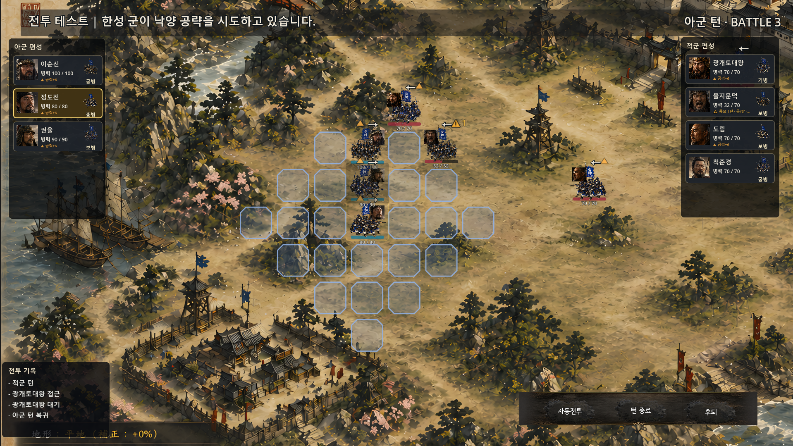
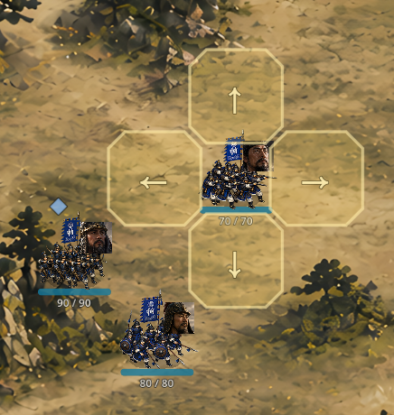
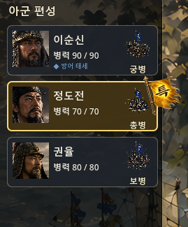
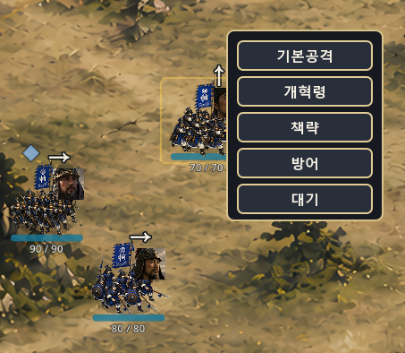

데모가 게임이 된 3일
이동하고, 바라보고, 싸우고, 설계하다 — v0.64k ~ v0.65h
2026년 5월 18일 — 5월 20일DAY 1 · 5월 18일 — 게임 루프가 생겼다
사흘 중 첫날이 가장 극적이었다. 전날까지 이동과 공격이 따로 놀던 데모 수준이었는데, 풀스크린으로 화면을 키우고 2D 좌표를 다시 맞추는 작업을 끝내자마자 모든 게 맞아떨어졌다. 유닛 이동, 공격, 방어, 공격 범위 문제가 한꺼번에 해결됐다.
그리고 드디어 이런 흐름이 완성됐다.
이순신 선택 → 이동 → 공격 or 대기 → 적군 턴 → 관우 공격 → 아군 턴 복귀 → 다시 이동 가능
전날까지는 이동/공격 데모 느낌이었다면, 이날부터는 턴제 전투 엔진의 기본 골격이 완성된 거다. 게임 루프가 생긴 날이었다.

같은 날 유닛 방향 문제도 잡았다. 적이 오른쪽에 있으면 부대 몸통이 오른쪽을 보고, 왼쪽에 있으면 왼쪽을 본다. 영웅 초상화와 깃발, HP바는 절대 반전하지 않고, 부대 토큰 이미지에만 flip을 적용했다. 서로 마주보는 군대가 처음 완성된 순간이었다.
여기서 멈추지 않았다. 이동 후 방향을 직접 선택하는 UI도 이날 추가됐다. 이동 완료 → 방향 선택 패널 표시 → 좌/우/상/하 선택 → facing 저장 → 공격 or 대기. 처음엔 글자 버튼이었는데, 바로 유닛 주변 4방향 그리드 칸에 화살표가 박히는 방식으로 개선했다.

적 AI도 이날 크게 업그레이드됐다. 단순히 이순신을 향해 직진하던 관우가, 이동 가능한 칸을 전부 BFS로 탐색하고 이동 후 공격 가능한 위치를 우선적으로 잡는 Smart Move + Attack AI로 바뀌었다. "어? 저기로 오면 닿네?" 하고 옆으로 틀어서 공격 위치를 잡는 느낌이 생겼다. 이게 전투 재미다.
하루 동안 점령 칸 차단, 후방 공격, 적 AI 이동, 공격 선택 모드, 행동 완료 후 재행동 방지, 우클릭 취소/롤백까지 전부 들어갔다. 말이 하루지, 거의 전투 엔진 한 편이 완성된 날이었다.
DAY 2 · 5월 19일 — 유닛이 진짜 얼굴을 갖게 됐다
둘째 날은 비주얼 작업이었다. 샘플 이미지로 돌아가던 유닛들이 실제 한/중/일 병종 이미지를 입기 시작했다.
먼저 보병 비주얼 그룹을 FootmanVisual.tscn으로 분리했다. 유닛 본체는 씬 템플릿, 전투 행동은 코드, 배치 위치는 Godot 2D 에디터 — 이 세 가지가 역할별로 분리된 구조가 이날 시작됐다. 이어서 중국군 기병 이미지를 넣어 관우와 연결하고, 아군 2부대/적군 2부대 배치도 완성했다. 이순신/정도전 vs 관우/장비, 4유닛이 전장에 서는 첫 날이었다.


공격 UX도 이날 확 바뀌었다. 자동으로 타겟이 잡히던 방식에서, 기본공격 버튼 → 공격 범위 표시 → 내가 직접 적을 클릭하는 방식으로 전환됐다. 이 구조의 진짜 가치는 나중에 드러난다. 정도전 같은 책략형 영웅의 버프/디버프 범위 표시, 광역기, 지형 효과까지 전부 이 구조 위에서 가능해진다.
다중 적군 AI도 이날 완성됐다. 관우뿐 아니라 장비도 AI actor로 행동하기 시작했다. 그리고 행동 가능한 아군에게는 골든 테두리가 반짝이고, 행동 완료 유닛은 자연스럽게 구분되는 Ready Frame UI도 들어갔다.
DAY 3 · 5월 20일 — 지금 짜는 코드가 거북선을 받아야 한다
셋째 날은 겉보기엔 조용했다. 라운드 전환 토스트에 먹물 배경 이미지와 셰이더 기반 dissolve 연출을 넣고, 이동 먼지 FX, 공격 slash FX, 피격 hit spark, 데미지 숫자 float까지 기본 전투 이펙트 팩을 완성했다.
그런데 진짜 작업은 따로 있었다. UnitVisualRoot 리팩토링이다.
이순신/정도전/관우/장비 4유닛의 비주얼 노드를 각자의 VisualRoot 아래로 단계별로 이관하는 작업(v0.65g 시리즈)을 진행했다. 그리고 작업 중간에 중요한 원칙을 하나 세웠다.
AllyUnitVisualRoot는 이순신 전용이 아니다.
지금의 4개 Root는 테스트 슬롯일 뿐이다.
최종 구조에서는 slot_id 기준으로 어떤 유닛이든 들어갈 수 있어야 한다.
지금 짜는 구조가 나중에 몽골 기병도, 거북선도, 판옥선도 받을 수 있어야 한다는 거다. 보병은 1×1 칸이지만, 거북선은 2×2일 수 있다. 이동 FX가 보병은 먼지지만 해전 유닛은 물결 wake가 돼야 한다. 지금 이걸 안 잡으면 나중에 100% 터진다.
그래서 v0.65h 시리즈에서 BattleUnitState에 slot_id, nation, domain, footprint, visual_key, portrait_key, attack_fx_profile, move_fx_profile 같은 확장 메타 필드들을 심기 시작했다. 지금 당장 쓰이는 필드가 아니라, 나중에 해전 모드가 오거나 공성 병기가 들어올 때를 위한 배관 공사다.
3일이 끝났을 때 전투 화면은 이랬다. 4유닛이 배치되고, 각자 방향을 갖고, 턴이 오가며, AI가 위치를 계산하고, 공격하면 이펙트가 터지고, 영웅 패널이 살아있다. 그리고 이 구조는 앞으로 수십 개의 유닛을 받을 수 있게 설계됐다. 데모가 게임이 됐다.